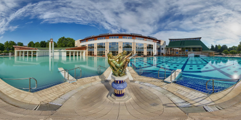

7815 Harkány, Kossuth L u. 7
+36 72 580 880
Gyógyfürdő
A Harkányi Gyógyfürdőben nem csak a gyógyvíz spontán hatása érvényesül. Természeti adottságai kitűnőek: kedvező éghajlata, a gyógyfürdő mikroklímája, és az évi 2100-2200 napsütéses óra kiváló kiegészítője egy gondosan megtervezett fürdőkúrának.
A 2003-ban felújított gyógyfürdőben egy teljesen, egy félig fedett és egy szabad gyógymedence összesen 2098 m2 vízfelszínnel, 110-153 cm vízmélységgel 34-38 C° víz hőfokkal biztosítja vendégeinknek a gyógyulást.
A mozgásszervi, ízületi betegségek megelőzésében, gyógyításában, csontritkulás, krónikus nőgyógyászati gyulladások, valamint a nyirokkeringés zavarainak javításában nagyon szép eredmények érhetők el egy-egy harkányi kúra során.
A harkányi gyógyvíz bizonyítottan hatásos a pikkelysömör (psoriasis) tüneteinek enyhítésében. Városunkon kívül csak két olyan hely van még a világon, ahol bizonyítottan gyógyítható a pikkelysömör.